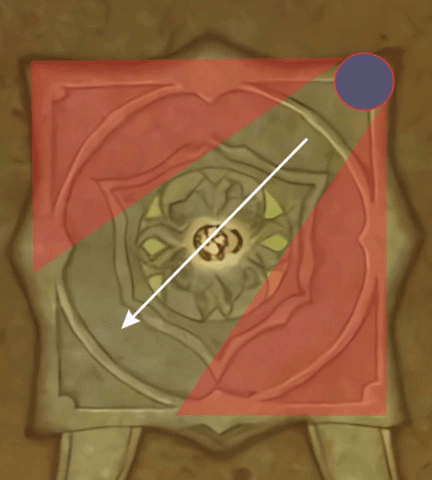
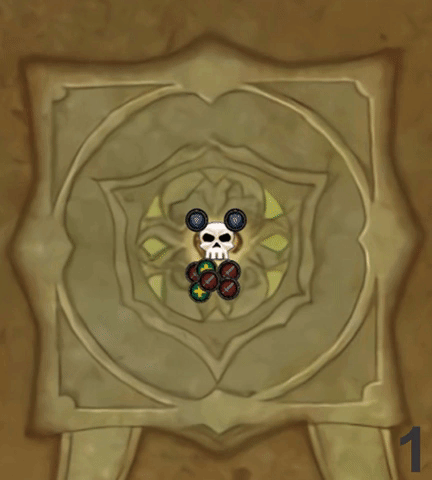
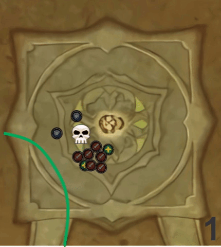

Kil'jaeden Normal / Heróico
Visão Geral
A luta possui 3 fases e duas fases de transição. Em que se resumem a:
- Primeira fase (100%-80%)
- 80%: Primeira transição
- Segunda fase (80%-40%)
- 40%: Segunda transição
- Terceira fase (40%-0%)
Um grupo será setado para realizar o soak nos Armagedom maiores, deem prioridade ao soak, respeitando a ordem designada.
Primeira fase
Tanks
- Posicionem-se em lados opostos
- Posicionem o Boss virado de costas para o grupo
- Troquem de taunt com 5 stacks de Garravis
- Utilizem CD de mitigação de acordo com sua classe para cada stack de Garravis
DPS
- Posicionem-se atrás do boss para evitar levar dano da Garravis
- Durante Armagedom, todos devem participar do soak (Respeitem a ordem de chegada!)
- Se já possuir o debuff de chuva, deve aguardar o termino para que pegue um novo soak
- Posicionem no lado esquerdo do boss quando marcados por reflexao e matem-os o mais rápido possível
Healers
- Utilize CD de cura caso a chama reflexão esteja sendo um problema
Primeira transição
Tanks
- Soak nos Armagedom maiores
DPS / Healer
- Continuem com o soak do Armagedom como na Primeira fase
- Quem deu soak, posicione no meio da sala para dividir o dano da Chama (Laser)
-
Liberem espaço no meio quando marcados pelo bambolê (Bambolê)
-
Quem deu soak, posicione no meio da sala para dividir o dano da Chama
Segunda fase
Repete mesma estratégia da Primeira fase
Todos
- Posicionem-se de maneira correta para evitar serem lançados para fora da plataforma pela Singularidade.
Posicionamento
Singularidade
Vermelho é a região que deve ser evitada a todo custo! 
Terceira fase
Todos
Esta fase é crucial que todas as mecânicas sejam feitas, pois qualquer erro pode ocasionar uma morte e arriscar um wipe da raid.
Durante a Darkness, o boss fica posicionado no meio da sala e TODOS devem entrar no rift quando estiver faltando 3 a 2 segundos para o fim do cast, previnindo assim, o dano da Darkness.
Ainda nessa fase, todos devem estar atentos aos obeliscos que irão surgir e ficar devidamente posicionado, como mostra nas imagens a seguir:
Posicionamento
Obelisco
- Movementem-se para ficar na diagonal do obelisco
- TODOS obeliscos devem ser levados em conta

Orb
- Apenas a pessoa designada para andar com a orb deve estar próxima dela
- O caminho deve estar livre para evitar que a orb estoure na posição incorreta
